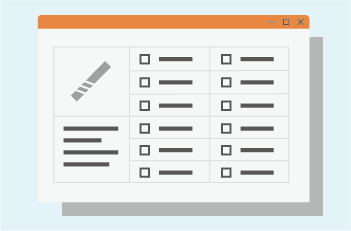

Product description
This function displays the tool list information of the machine tool magazine on the PC or mobile device in real time, providing users with the remote control of the tool usage status of each machine, thereby realizing tool management in CNC equipment processing and helping use The operator performs tool scheduling; and through further system integration, the purpose of processing cost control can be achieved.
Product description
- Can clearly understand the current information of all tools, easy to manage and maintain
- It can reduce the inventory of tools, reduce the occupation of personnel, capital, plant, and equipment, and reduce tool preparation errors